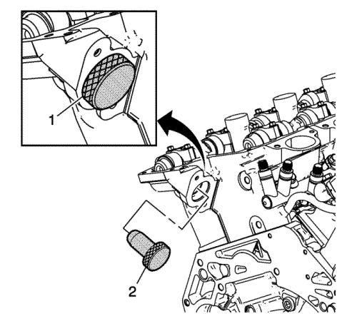
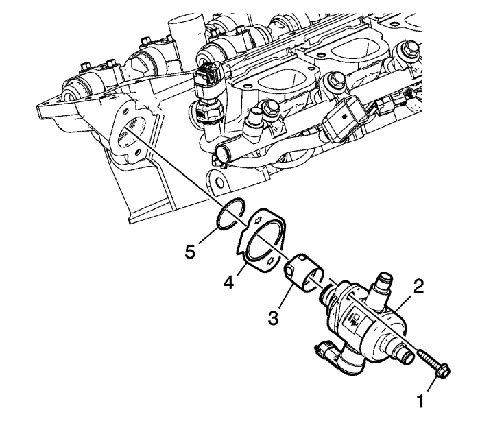
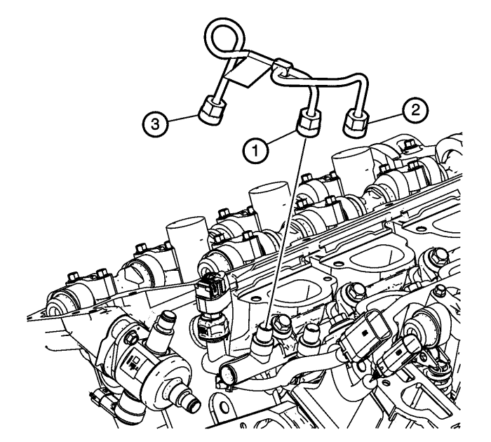
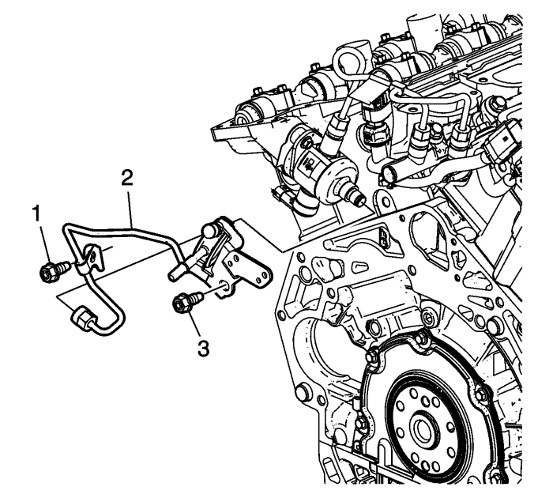
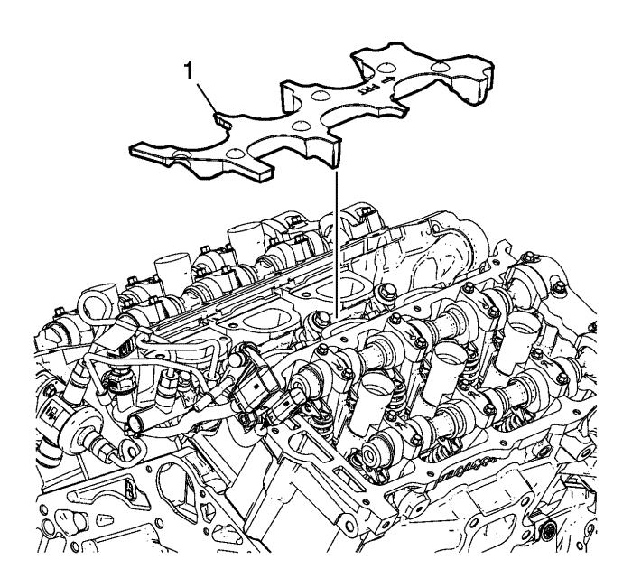

Nota: El árbol de levas debe estar en la posición de base circular antes de montar la bomba de combustible de alta presión.
- Utilice la galga de alineación EN 48896 (2) para asegurar que el lóbulo del árbol de levas está en la posición de base circular. En la posición de base circular, la herramienta tiene que estar alineada con la culata (1)

- Lubrique el orificio de la culata de la bomba de combustible de alta presión con aceite de motor 5W30.
Nota: Asegúrese de que el empujador de rodillo de la bomba de combustible de alta presión está bien orientado, que el árbol de levas está en su base circular y que el pistón nº 1 está en el punto muerto superior (PMS) de la carrera de escape.
- Lubrique el empujador de rodillo de la bomba de combustible de alta presión con aceite de motor 5W30 y móntelo en el orificio de la culata.
- Coloque una junta (4) NUEVA para la bomba de combustible de alta presión.
- Coloque una junta tórica (5) NUEVA para la bomba de combustible de alta presión.
Nota: Antes de montar, asegúrese de que los seguros de los tornillos de plástico estén colocados en los orificios de fijación de la bomba de combustible de alta presión.
- Monte el seguidor del del taqué de válvula (3).
- Monte la bomba de combustible de alta presión (2).
Precaución: Consulte Precaución con las fijaciones en la sección Prólogo
Atención: Apriete a mano y de forma alterna los pernos de la bomba de combustible una vuelta cada vez hasta que la bomba queda perfectamente asentada. Si intenta bajar la bomba sin apretar uniformemente cada lado, puede provocar daños en el émbolo de la bomba.
- Coloque y apriete a mano los NUEVOS pernos de la bomba de combustible de alta presión (1) uniformente y apriete los pernos de la bomba de combustible de alta presión a 15 N·m (11 lib. pie).

Nota:
| • | NO reutilice el tubo de cruce del tubo de distribución de combustible de alta presión. |
| • | El orden de apriete y el par son críticos para obtener un ajuste y funcionamiento adecuados del sistema de combustible. Asegúrese de seguir de forma exacta los pasos de montaje y apriete. |
- Monte el NUEVO tubo de cruce de distribución de combustible de izquierda a derecha y de alta presión colocando las tres tuercas de fijación del tubo de cruce (1), (2) y (3) y apretándolas hasta donde pueda con los dedos.
- Apriete los acoplamientos del tubo de cruce de distribución de combustible a 30 N·m (22 lib. pie) en el siguiente orden: (1) tubo de distribución de combustible izquierdo, (2) tubo de distribución de combustible derecho y (3) bomba de combustible.

- Monte el NUEVO tubo de alimentación de combustible (2) colocando la tuerca de la tubería de combustible en la bomba de combustible apretándola con los dedos.
- Coloque y apriete con los dedos el perno del tubo de distribución de combustible derecho (3).
- Coloque y apriete con los dedos el perno del tubo de distribución de combustible izquierdo (1).
- Apriete el perno del tubo de alimentacón de combustible izquierdo (1) a 10 N·m (89 lib. pulg.).
- Apriete el perno del tubo de alimentacón de combustible derecho (3) a 10 N·m (89 lib. pulg.).
- Apriete la tuerca de fijación del tubo de alimentación de combustible a 30 N·m (22 lib. pie).
- Coloque los conectores de cableado del tubo de distribución de combustible en el soporte del tubo de alimentación de combustible.

- Monte la protección acústica del tubo de distribución de combustible (1).